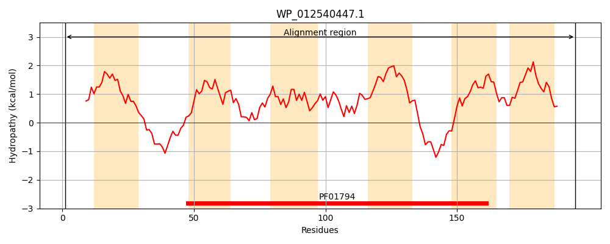
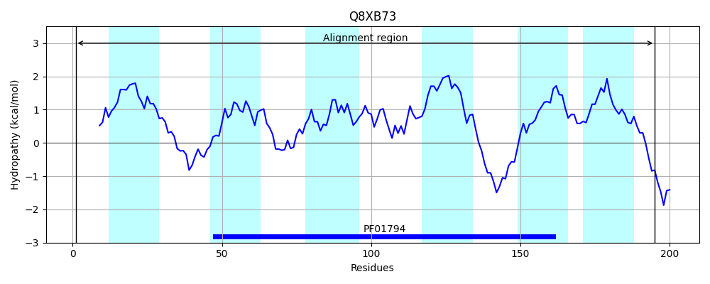
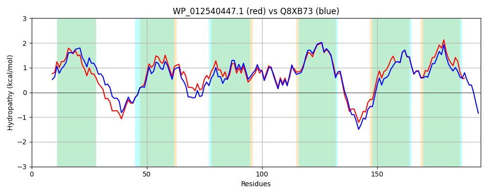

Hit Accession: Q8XB73
Hit TCID: 5.B.7.1.1
Hit Description: gnl|BL_ORD_ID|17036 gnl|TC-DB|Q8XB73|5.B.7.1.1 Hypothetical protein yedZ - Escherichia coli O157:H7.
Mach Len: 195
e:0.000000
Query TMS Count : 6
Hit TMS Count: 6
TMS-Overlap Score: 5.150000
Predicted Substrates:CHEBI:10545;electron
BLAST Alignment:
Score: 827 , Bit scores: 323 bits, E-value: 5.1e-114, Alignment length: 195, Percentage identity: 81
Query: 1 MRFTVKQIAWLKVFLHLAGFLPLVWLFWAGHQGYFSADPAKDIQHFTGRMALKFLLATLLVAPLARYAKQPLLIRIRRLLGLWCFAWATLHLTSYTLLELGINNLALLGSEIINRPYLTLGMICWVILLALAATSTQAMQRKLGRRWQLLHNFVYLVAILAPIHYLWSVKIVSPQPIIYALLAVVLLACRYKKFR 195
MR T KQ+ WLKV LHLAG LP +WL WA + G ADP KDIQHFTGR ALKFLLATLL+ PLARYAKQPLLIR RRLLGLWCFAWATLHLTSY LLELG+NNLALLG E+I RPYLTLG+I W+ILLALA TSTQAMQRKLG+ WQ LHNFVYLVAILAPIHYLWSVKI+SPQP+IYA LAV+LLA RYKK R
Sbjct: 1 MRLTAKQVTWLKVCLHLAGLLPFLWLVWAINHGGLGADPVKDIQHFTGRTALKFLLATLLITPLARYAKQPLLIRTRRLLGLWCFAWATLHLTSYALLELGVNNLALLGKELITRPYLTLGIISWIILLALAFTSTQAMQRKLGKHWQQLHNFVYLVAILAPIHYLWSVKIISPQPLIYAGLAVLLLALRYKKSR 195 | Protein Hydropathy Plots: |
|---|
|  |  |
Pairwise Alignment-Hydropathy Plot:
|
|---|
|  |